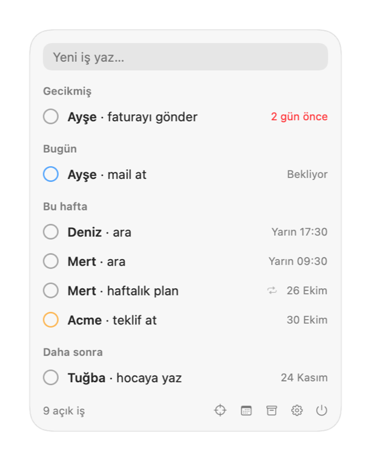
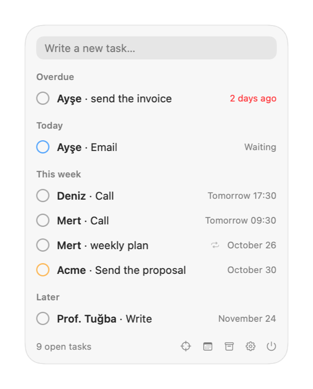
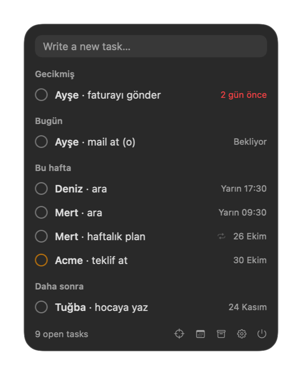
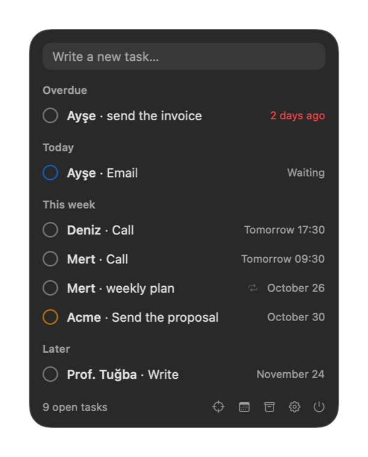
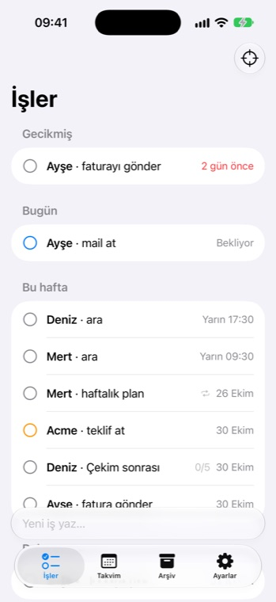
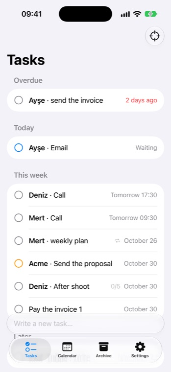
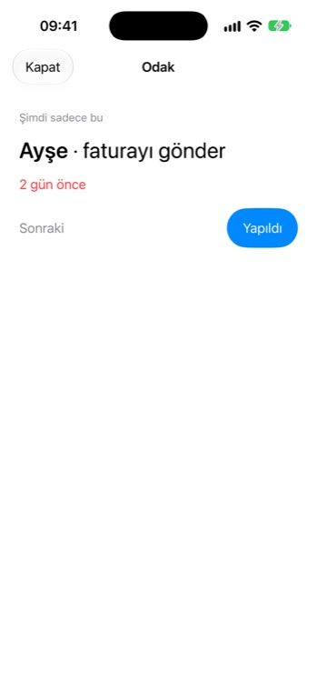
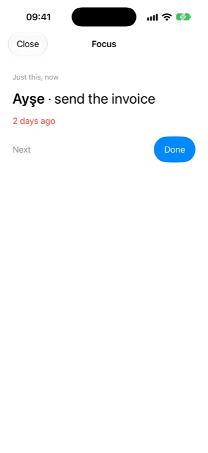
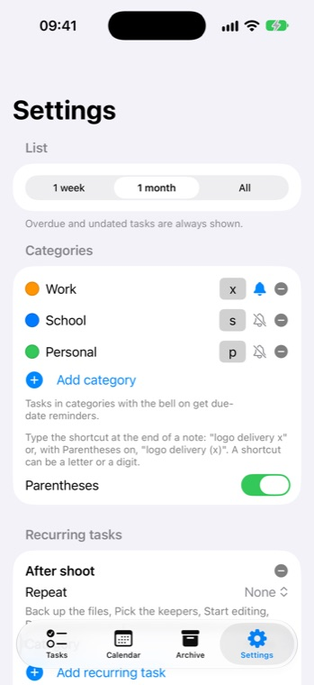

Bir cümle yazın.
İşiniz kendini hatırlatsın.Type a sentence.
Let it remind you.
Menü bar'da ve telefonunuzda duran küçük bir iş uygulaması. Kişiyi, işi ve tarihi kendisi anlar; zamanı gelince size ulaşır. Not, takvim ve onlarca liste arasında kaybolan işler için.
A tiny task app for your menu bar and your phone. It works out the person, the task and the date by itself, and reaches you when it's time. For tasks that get lost between notes, calendars and ten different lists.
Menü bar'da, hep elinin altında
In your menu bar, always at hand
Tek bir küçük panel. Yazın, listeye göz atın, daireye basın, bitti.
One small panel. Type, scan the list, tap the circle, done.




Menü bar ya da DockMenu bar or Dock
İsterseniz yalnızca menü bar'da, isterseniz normal bir uygulama olarak Dock'ta kullanın. Hızlı ekleme için her yerden ⌃⌥N.Live only in the menu bar, or run it as a regular Dock app. Press ⌃⌥N anywhere for quick add.
Telefonunuzda da aynısı
The same on your phone
Mac ile iPhone arasında iCloud ile eşitlenir. Aracı bir sunucu yok, işleriniz yalnızca sizde kalır.
Syncs between Mac and iPhone through your own iCloud. There is no middleman server; your tasks stay with you.





Ana ekranda ve kilit ekranında
On your Home and Lock Screen
Widget'lar sıradaki işlerini uygulamayı açmadan gösterir.
Widgets show what's next without opening the app.
Ne yapar
What it does
Formsuz eklemeNo forms
"Deniz'i ara 17:30", "her ayın 15'i fatura kes". Türkçe ve İngilizce, cihazın içinde, sunucusuz."Call Deniz 5pm", "every Monday plan". Turkish and English, on-device, no server.
KategorilerCategories
Notun sonuna x ya da (x) yazın, iş kendi rengiyle doğru yere gitsin.End a note with x or (x) and it lands in the right place, in its own colour.
Sakin hatırlatmaCalm reminders
Teslimden önceki akşamlar, teslim sabahı, bir de uzun süre uğramazsanız bir dürtme. Bildirimden Yapıldı ya da Ertele.Evenings before a deadline, the morning of, and a nudge only if you've been away. Done or snooze from the notification.
Düzenli işlerRecurring tasks
Her ayın 15'inde fatura kes: zamanı gelince listenize kendiliğinden düşer, adımlarıyla."Send the invoice on the 15th": it lands on your list by itself, with its steps.
Apple ile bütünleşikPlays well with Apple
Apple Takvim, Siri, Spotlight, Kısayollar ve CSV dışa aktarma.Apple Calendar, Siri, Spotlight, Shortcuts and CSV export.
Ücretsiz, açık kaynakFree and open source
Reklam yok, hesap yok, takip yok. MIT lisansı.No ads, no account, no tracking. MIT licensed.